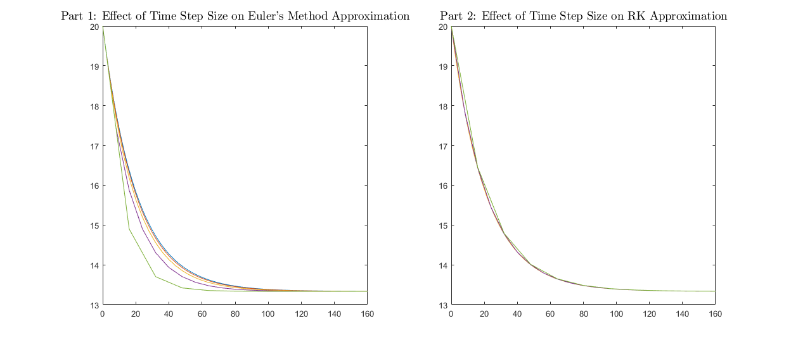
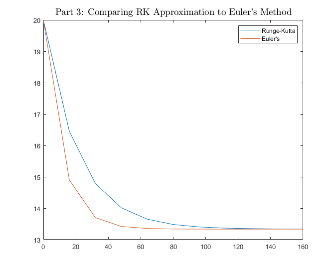

Contents
%%%%%%%%%%%%%%%%%%%%%%%%%%%%%%%%%%%%%%%%%%%%%%%%%%%%%%%%%%%%%%%%%%%%%%%%%%% % CODE CHALLENGE 6 - Template Script % % The purpose of this challenge is to predict whether or not the Boulder % Reservior will have to close due to a major leak. % % In Coding Challenge 5, you did the following: % - Part 1: % 1) Read in the provided data file % 2) Estimated reservoir volume w/ Trapezoidal and Simpson's 1/3 Rules % 3) Compared the accuracy of the two results % % - Part 2: % 1) Propagated t and h using Euler's Method % 2) Used plots to observe the effect of different timesteps on the % estimation accuracy % % In Coding Challenge 6, you will build upon the code that you wrote up % for Coding Challenge 5. Fill in what you can in the below code template % by using the code you completed last week. Once you get to the % Runge-Kutta approximation, calculate K-values and use the Runge-Kutta % equations to approximate the reservoir height over time. % % In the last section of this code, create plots that effectively % illustrate differences between approximation methods and parameters, % comparing Runge-Kutta using different time steps and also Runge-Kutta vs. % Euler's Method. % %%%%%%%%%%%%%%%%%%%%%%%%%%%%%%%%%%%%%%%%%%%%%%%%%%%%%%%%%%%%%%%%%%%%%%%%%%% % % NOTE: DO NOT change any variable names already present in the code. % % Upload your team's script to Gradescope when complete. % % NAME YOUR FILE AS Challenge6_Sec{section number}_Group{group breakout #}.m % ***Section numbers are 1 or 2*** % EX File Name: Challenge6_Sec1_Group15.m % % STUDENT TEAMMATES % 1) Nina Dolatshahi % 2) Alex Miceli % 3) Luca Herlein % 4)Brian Trybus % 5) % % %%%%%%%%%%%%%%%%%%%%%%%%%%%%%%%%%%%%%%%%%%%%%%%%%%%%%%%%%%%%%%%%%%%%%%%%%%%
Housekeeping
Don't clear variables (i.e. with "clear"); this makes grading difficult.
close all; % Close all open figure windows clc; % Clear the command window
Prerequisites from Coding Challenge 5 %%
% Reading in Provided Depth Data % data = dlmread('depth_data.csv',',',1,0); % Read in depth data from .csv x = data(:,1); % Position along reservoir [ft] h = data(:,2); % Depth of reservoir [ft] L = 4836; % Length of reservior [ft]
Set-up for Runge Kutta Method %%
Problem Parameters %
h0 = 20; % Initial reservoir depth [ft] alpha = 1.5e6; % Relating volume change to depth [ft^2/day] dV_in = 2e7; % Volume inflow rate [ft^3/day] % Approximation Parameters % timestep = [16 8 4 2 1]; % Timesteps to use for approximation [days] for j = 1:length(timestep) t_end = 160; % Choose an end time for your program [days] t = 0:timestep(j):t_end; % Allocate a time vector [days] h = zeros(1,length(t)); % Allocate a depth vector [ft] h(1) = h0; % Set a depth vector initial value [ft] h_RK = h; % Set a depth vector for Runge-Kutta [ft] for i = 1:(length(t)-1) % Euler's Method - use your code from Lab 6 dhdt = get_dhdt(h(i),L,alpha,dV_in); % Get dh/dt at this depth [ft/day] h(i+1) = (h(i)+(dhdt*timestep(j)));% Compute next depth value t(i+1) = t(i) + timestep(j); end for i = 1:(length(t)-1) % Runge-Kutta Method K1 = get_dhdt(h_RK(i),L,alpha,dV_in); % Calculate your K1 value K2 = get_dhdt(h_RK(i)+(timestep(j)*.5*K1),L,alpha,dV_in); % Calculate your K2 value K3 = get_dhdt(h_RK(i)+(timestep(j)*.5*K2),L,alpha,dV_in); % Calculate your K3 value K4 = get_dhdt(h_RK(i)+(timestep(j)*K3),L,alpha,dV_in); % Calculate your K4 value h_RK(i+1) = h_RK(i)+((timestep(j)/6)*((K1)+(2*K2)+(2*K3)+(K4))); % Compute your next reservoir height [ft] end % Don't touch these three lines of code... % eval(['t_' num2str(timestep(j)) ' = t;']) eval(['h_E_' num2str(timestep(j)) ' = h;']) eval(['h_RK_' num2str(timestep(j)) ' = h_RK;']) end
Plotting Results %%
READ THIS: After the above code runs, the "eval" statements at the end of the loop create three sets of variables. One set holds the time vectors used in the various approximations, named "t_16" for the 16-day time step, "t_8" for the 8-day time step, etc. Another set holds the Euler approximation results for the various timesteps, named "h_E_16" for the 16-day time step, "h_E_8" for the 8-day time step, etc. The last set holds the Tunge-Kutta approximation results for the various timesteps, named "h_RK_16", "h_RK_8", etc. For simplicity, you may use these vectors in your plotting.
fig1 = figure('Units','Normalized','Position',[0 0.25 0.65 0.50]); % Part 1: Effect of timestep on Euler's Method approximation % subplot(1,2,1) plot(t_1,h_E_1,t_2,h_E_2,t_4,h_E_4,t_8,h_E_8,t_16,h_E_16) title('Part 1: Effect of Time Step Size on Euler''s Method Approximation', ... 'Interpreter','latex','Fontsize',14) % Here, plot the results of your Euler's approximation using different % time steps. Is there a significant difference between time steps? ... % Part 2: Effect of timestep on Runge-Kutta approximation % subplot(1,2,2) plot(t_1,h_RK_1,t_2,h_RK_2,t_4,h_RK_4,t_8,h_RK_8,t_16,h_RK_16) title('Part 2: Effect of Time Step Size on RK Approximation', ... 'Interpreter','latex','Fontsize',14) % Here, plot the results of your Runge-Kutta Method approximation using different % time steps. Is there a significant difference between time steps? ... fig2 = figure('Units','Normalized','Position',[0.65 0.25 0.35 0.50]); % Part 3: Comparing Runge-Kutta to Euler's Method % plot(t_16,h_RK_16,t_16,h_E_16) title('Part 3: Comparing RK Approximation to Euler''s Method', ... 'Interpreter','latex','Fontsize',14) legend('Runge-Kutta','Euler''s') % Here plot the results of your Runge-Kutta and Euler's Method % approximations together. You are encouraged to use a few different step % sizes for Euler's Method, but you can decide for yourself how best to % illustrate the difference in accuracy between Euler and Runge-Kutta. Is % there a significant difference in approximation accuracy? 